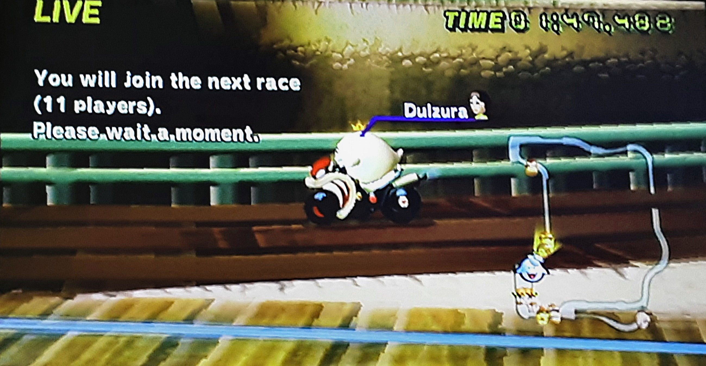
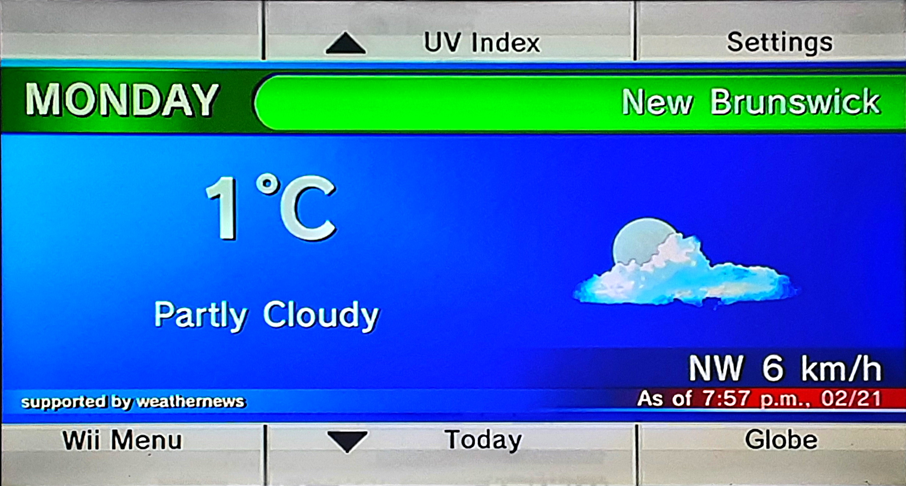
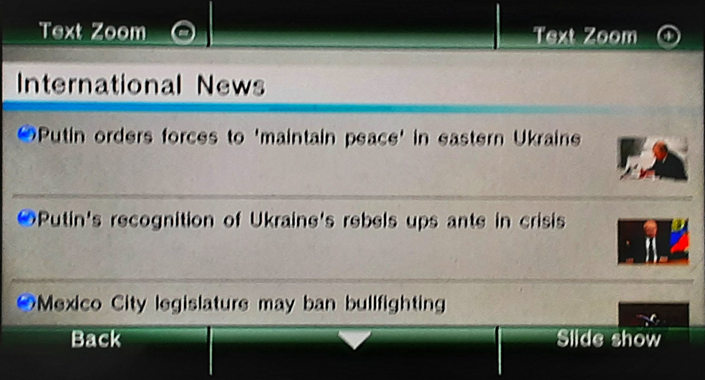
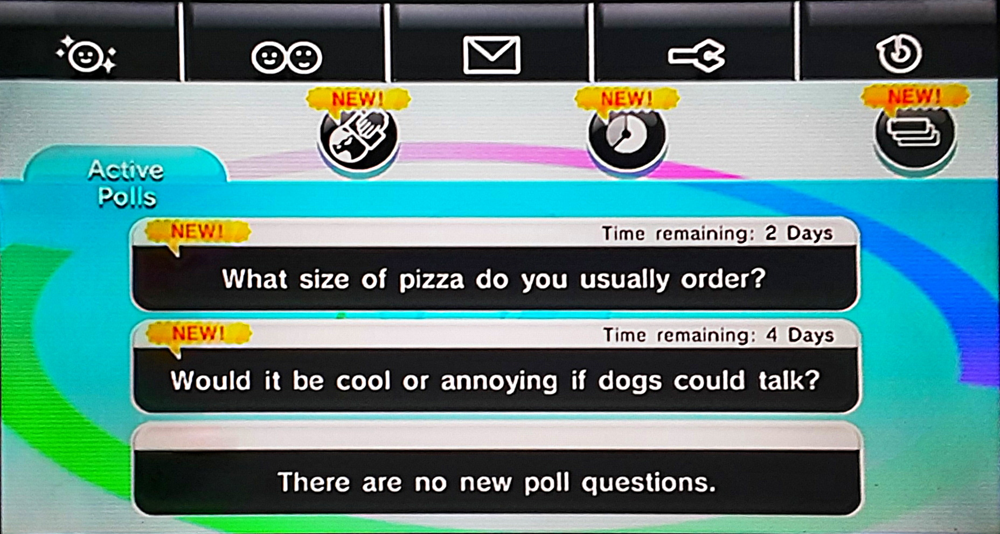
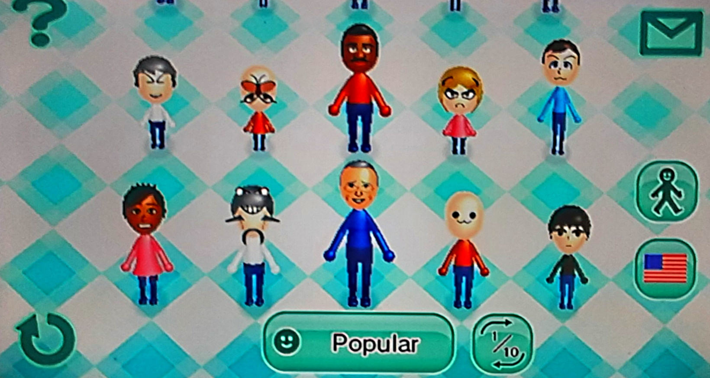

The problem
The Wii had two main services for online there was WiiConnect24 for games (ex: mario kart wii) and the Nintendo Wi-Fi Connection for channel (ex: weather channel). But in 2013 and 2014, both services were shutdown.
The solution
Fortunately, there are alternatives to the Wii online service.
Wiimmfi
Wiimmfi is a replacement for the Nintendo Wi-Fi Connection (the service that allows you to connect and play games online).
It was made by Wiimm a talented individual who monitored the official service before it went offline.
Installing
I suggest you follow the guide on wii.guide because the process may change. There are also other ways to install Wiimmfi, Ive chosen the Priiloader methode.
But here's a summery of the steps:
- Download and install Priiloader
- In Priiloader, look for
System Menu Hacks. - Turn on
Wiimmfi patch v4. - Save and exit.
Now when you try to play a wii game online it will work.

RiiConnect24
RiiConnect24 is a replacement for WiiConnect24 (the service for many channels that used the internet).
Many people have contributors to the project in many ways.
Installing
Again I suggest you follow the guide on wii.guide because the process may change.
But here's a summery of the steps:
- Download the RiiConnect24 Patcher
- Use the patcher to get the required files on your SD card.
- Use a tool like Wii Mod Lite to install the WADs.
- Optionally, change your DNS to the one provided by RiiConnect24.
That's it! You can now view the weather, news, vote on poll, download miis and more.
   